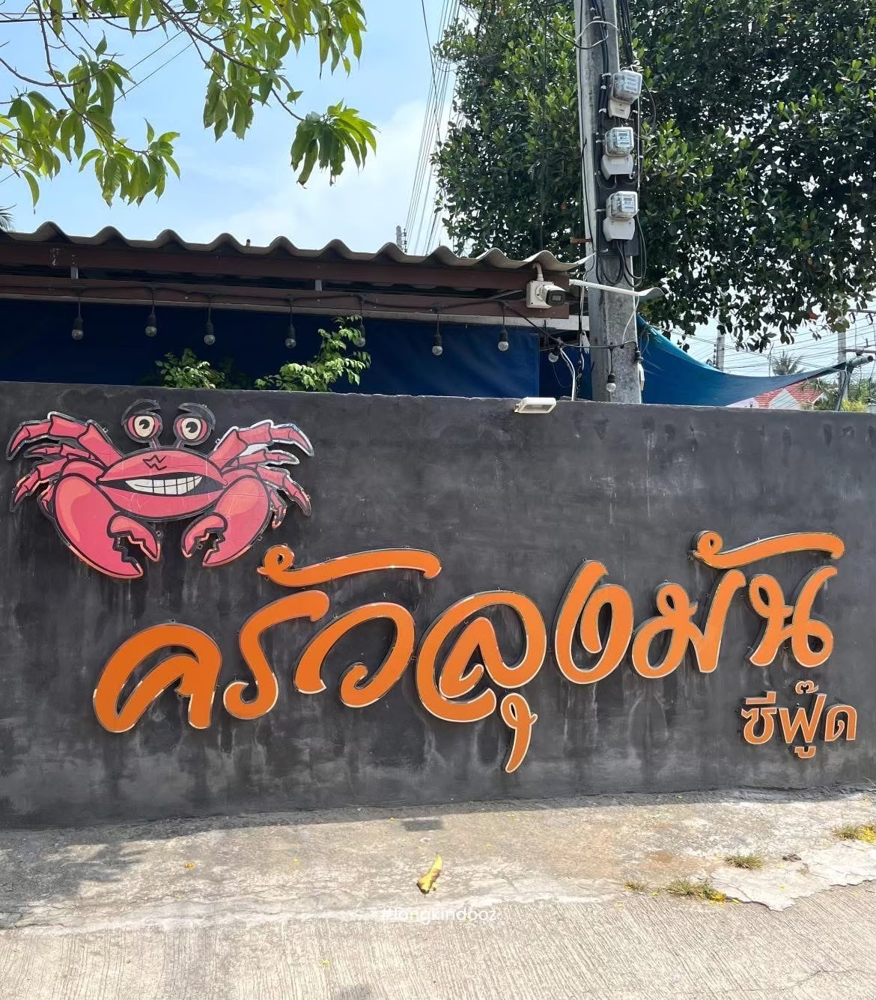
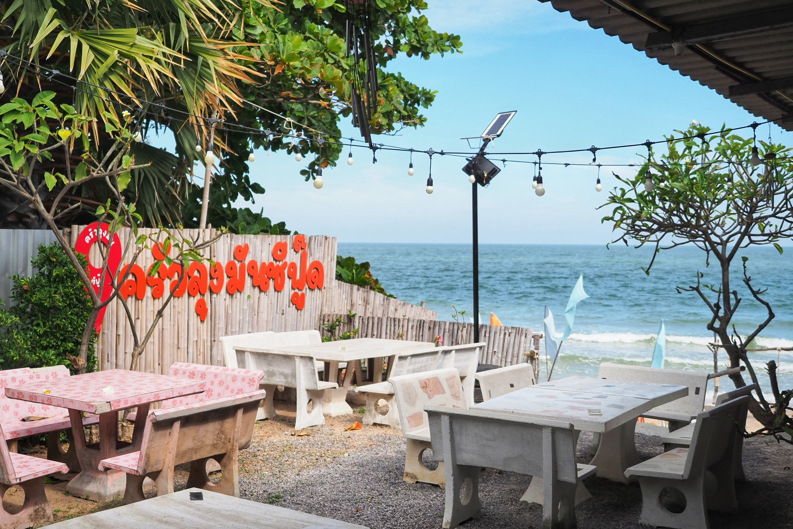
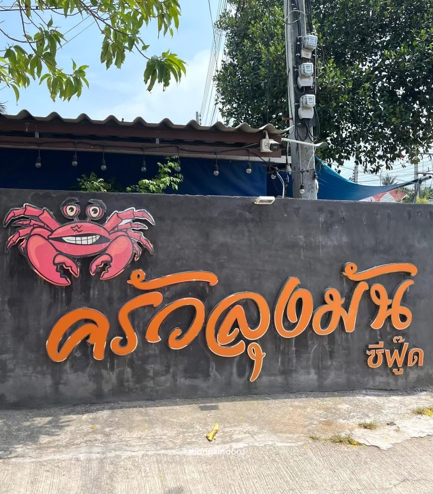
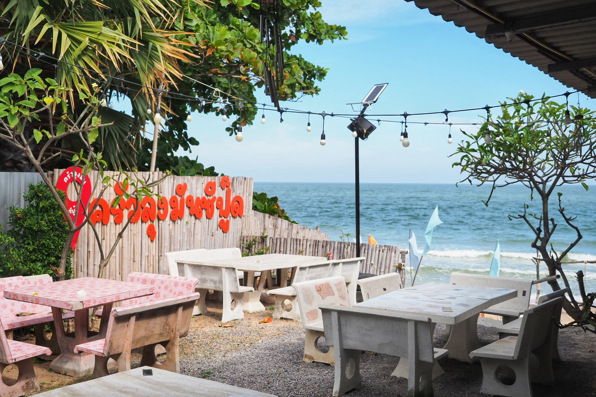
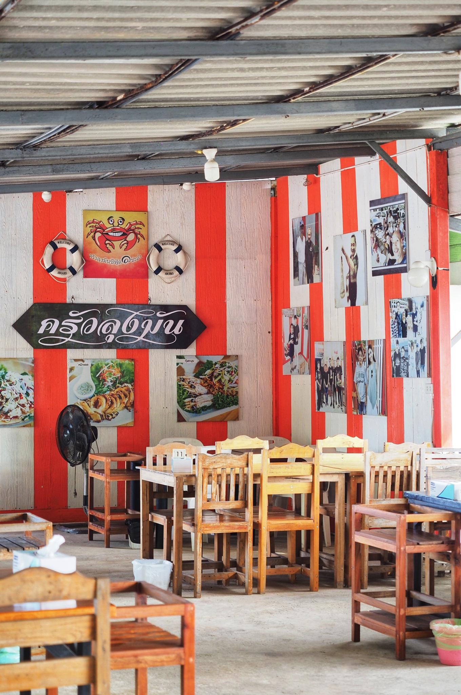

Our Delicious Story
ร้านอาหารครัวลุงมันซีฟู้ด ชะอำ เป็นร้านอาหารเล็กๆริมทะเลที่เกิดขึ้นจากความตั้งใจของครอบครัวเราค่ะ คุณพ่อเป็นชาวประมงที่ออกทะเลมามากกว่า 20 ปี จึงรู้วิธีการเลือกของทะเลสด ๆ จากเรือส่งตรงมาถึงมือคุณแม่ ที่เป็นแม่ครัวคู่ใจมานานกว่า 15 ปี ทุกจานในร้านอาหารของเราคุณพ่อคุณแม่เป็นผู้ลงมือทำเองทั้งหมด ร้านของเราไม่มีสูตรลับอะไรนอกจาก "ความตั้งใจ" และ "รักในการทำอาหาร" ร้านของเราตั้งใจทำให้เหมือนลูก ๆ ที่บ้านทาน ที่พร้อมเสิร์ฟทั้งความสดและความอร่อย เพราะฉะนั้นไม่ว่าคุณจะมาทานคนเดียว หรือมากับครอบครัว ร้านอาหารครัวลุงมันซีฟู้ด ยินดีต้อนรับทุกท่านด้วยความอบอุ่นค่ะ